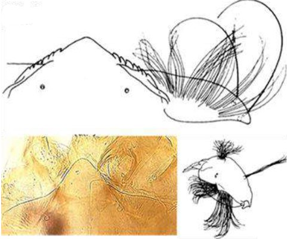

Clé des Prodiamesinae
Mentum avec une dent médiane simple et large (peut être encastrée)


Dent médiane forme un dôme
Barbe assez fournie. Mandibule courte avec 3 dents internes indistinctes
Dent médiane formant un creux (comme
cassée ou usée au milieu)
2 Barbe peu fournie. Mandibule avec une longue dent apicale et 2 dents internes